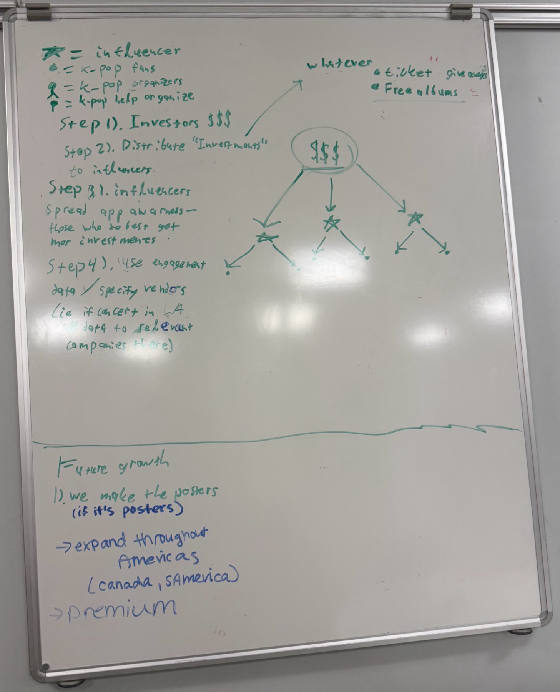
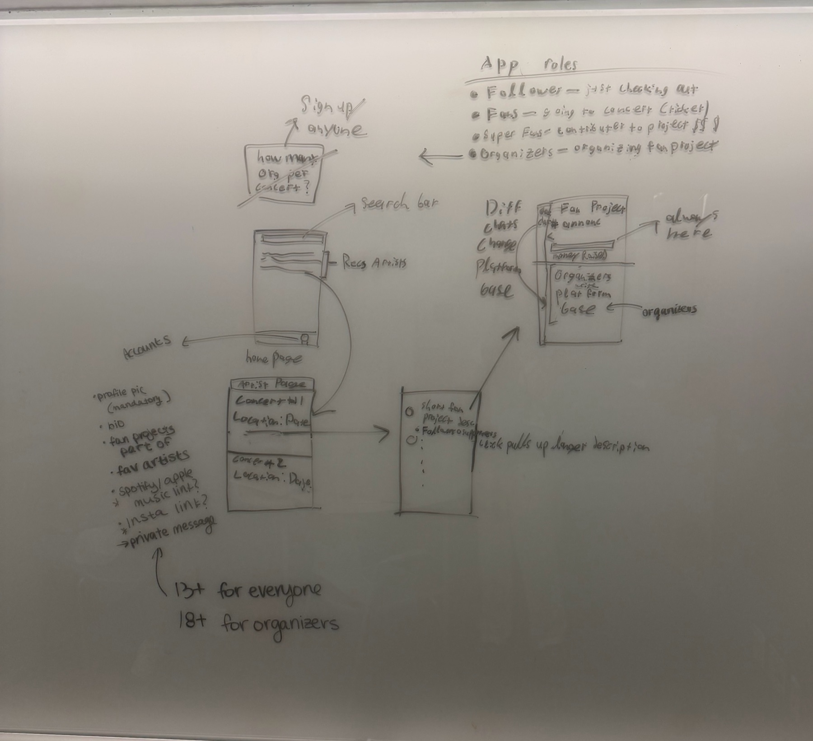

Now building: Oncore
What I built
Full idea planned out; filed an official trademark.
The hard part
Pitching and getting the backing (idea-wise) from $1M+ VC partners who tore our idea apart.
What I learned
Differentiation, exit strategy, and an iterative process of learning what is right/wrong make a company thrive.
Results
We are just starting a media page, getting the app started, and getting all the paperwork together (waiting for signing), after we have already gotten a trademark filed.

- These are idols or other significant figures that people surround themselves with (Taylor Swift).
- Hosting spaces where people go to connect with others allows for income from people who want to be more promoted on the site, as well as taking a small percent of donations to the larger fan project.
- Expanding further into the future.

- Different roles that can be attained in the app depending on the amount of involvement the individual puts into the app.
- The search page allows for finding specific projects or people.
- Restrictions on who can be in the app for safety purposes.
[PLACEHOLDER now.link.text: link text for the startup's landing page]
- Project
- Oncore
- Role
- Co-founder
- Years
- 2026
- Status
- v0 in development